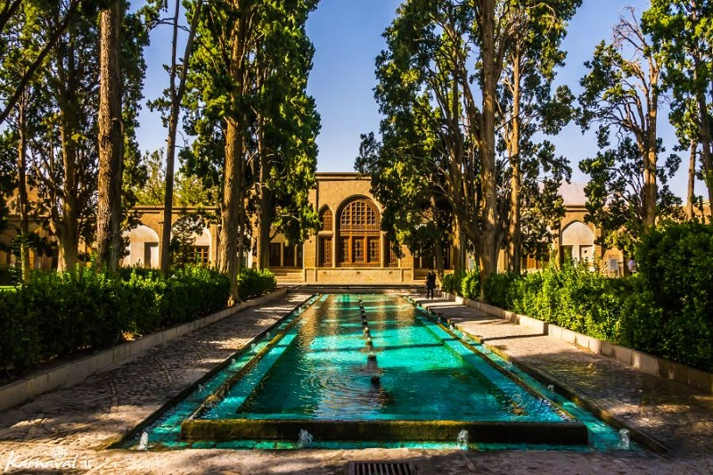
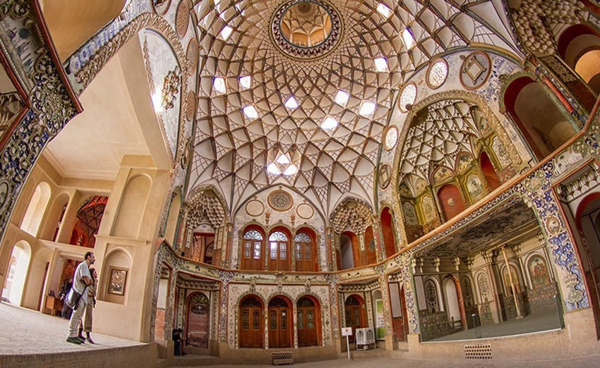

کاشان شهری تاریخی، مرکز شهرستان کاشان و بزرگترین و پرجمعیتترین شهرستان پس از مرکز استان اصفهان میباشد. کاشان را دارالمومنین ، شهر گل و گلاب ، شهر خانههای تاریخی و پایتخت فرش و قالی جهان میخوانند.یهودیان کاشان به این شهر لقب اورشلیم کوچک داده بودنداین شهر زادگاه یکی از کهنترین تمدنهای جهان در منطقه ای بنام سیلک با قدمتی بیش از هفت هزار سال است. کاشان بیست و هشتمین شهر پرجمعیت ایران است. این شهر اولین تمدن یکجانشینی و شهرنشینی را دارد.کاشان با بیش از ۱۷۰۰ اثر تاریخی که 333 اثر آن ثبت ملی و یک اثر ثبت یونسکو (باغ فین) شده یکی از دیدنی ترین شهرهای ایران میباشد. کاشان مهد تمدن و فرهنگ سنتی ایران است. این شهر دارای بیش از هفت هزار سال قدمت شهرنشینی و یکی از زیباترین شهرهای ایران است. کاشان در طول تاریخ سکونت گاه مردمانی از نژادها و ادیان مختلف بوده،این شهر در قرون گذشته یکی از سکونت گاه های یهویان ایران بود،یهودیان کاشان عمدتاً از دسته یهودیان اخراجی از اسپانیا بودند که در این منطقه سکنی گزیدند و در دهه های بعدی اکثراً مسلمان شدند کاشان یکی از نخستین سکونت گاههای جمعی بشر روی کره خاکی با نام تمدن سیلک است و برخی چون جهانشاه درخشانی معتقدند این خطه در تکوین تمدن ایرانی نقش اساسی داشتهاست. کاشان شهری با اصالت و با مشاهیر علمی و ادبی متعددی است و نقش پررنگی در صنعت گردشگری ایران دارد. عدهای از مورخین کاشان را نخستین شهر ایران و جهان میدانند.
اقلیم این شهر که دارای دو بخش کوهستانی و کویریست که این ویژگی باعث شده همزمان آب و هوای متفاوتی رو در مناطق اطراف آن رویت کرد. مناطق کویری در بخش شمالی و شرقی و هوایی کوهستانی در بخش جنوبی و غربی آن قرار دارد، وجود بخش گرمسیر در نزدیک کاشان باعث شده که میوه های (چغاله بادام، گوجه سبز، زردآلو و قیصی) آن زودتر به دست بیاید و نوبرانه راهی بازار شود، که آن را به یکی از سکونتگاههای مهم در ایران بدل ساختهاست. کاشان با ۲۷۰۰ هکتار مزرعه گل محمدی بزرگترین تولید کننده گل محمدی و همچنین بالاترین نرخ تولید گل محمدی با چهار تن در هکتار میباشد و در تولید بیش از ۱۵ هزار تن گلاب بزرگترین تولیدکننده گلاب میباشد، آداب و رسوم گلابگیری و قالیشویان از مراسم سنتی این شهر است که سالانه بازدیدکنندگان زیادی را به خود اختصاص میدهد. مراسم گلابگیری معمولاً از اوایل اردیبهشت ماه شروع شده و تا اواخر خرداد ادامه دارد که مقصد گردشگری تعداد زیادی ار مردم ایران میباشد و مراسم قالیشویان در جمعه دوم مهرماه هر سال در کاشان برگزار میگردد. از مناطق کویری کاشان میتوان به راوند، ابوزیدآباد، نوش آباد، سفیدشهر، یزدل، خزاق، مشکات را نام برد. از مناطق کوهستانی کاشان نیز میتوان قمصر، قهرود، کامو، نیاسر، برزک و مرق و نشلج را عنوان کرد.
باغ فین کاشان، نام یک باغ ایرانی است که از زمان های قدیم در محله ای به نام فین در کاشان جای داشته است. حمام فین هم یک حمام تاریخی است و در مجموعه باغ فین قرار دارد. جایی است که ناصرالدینشاه، در سال ۱۸۵۲ میلادی صدراعظم خود امیرکبیر را در آن به قتل رساند. سابقه و قدمت باغ فین و بناهای آن به دوره صفویه بازمیگردد. وسعت باغ بالغ بر ۲۳ هزار مترمربع و شامل یک حیاط مرکزی است که به وسیله دیوار، بارو و برجهای استوانه شکل محصور شده است. در مقایسه با بسیاری از باغهای ایرانی مشابه، باغ فین با آب قابل توجهی آبرسانی میشود. این باغ تاریخی یکی از پربازدیدترین مکانهای گردشگری در استان اصفهان است به قسمی که عنوان پربازدیدترین اثر تاریخی این استان را در نوروز ۱۳۹۷ و ۱۳۹۸ به دست آورد.
خانهٔ بروجردیها از آثار تاریخی شهر کاشان است. این بنا که حاج سید حسن نطنزی ساختهاست در محلهٔ سلطان میراحمد واقع است و در نیمهٔ دوم قرن ۱۳ هجری و در زمان قاجار ساخته شده و تحت شماره ۱۰۸۳ در فهرست آثار ملی کشور ثبت شدهاست. این خانه با بادگیرهای قرینه هلالی شکل زیبایی بر بام تالار و کلاه فرنگی روی آن یکی از زیباترین جلوههای معماری ایرانی را به معرض نمایش میگذارد. بهطوریکه در کتیبه چهار طرف تالار آن آمدهاست، ساخت بنا به سال ۱۲۹۲ ه-ق بازمیگردد.
مساحت این خانه ۱۷۰۰ متر مربع و زیربنای آن ۱۰۰۰ مترمربع است؛ شامل ۲ قسمت بیرونی و اندرونی، ۲ ورودی اصلی و فرعی، هشتی، راهرو، حیاط، تابستان نشین، زمستان نشین، آشپزخانه، حیاطهای سرپوشیده و زیرزمینی بزرگ است. خانهٔ بروجردیها در دو طبقه و در قسمت جنوبی با سرداب ۳ طبقه میباشد.
نقاشیهای ارزنده و گچبریهای این خانه، زیر نظر صنیع الملک، نقاش بزرگ ایران و عموی کمال الملک اجرا شدهاست. صاحب این خانه، حاج سید حسن نطنزی از بازرگانهای نطنزی مقیم کاشان و معمار آن استاد علی مریم کاشانی بودهاست. وی به خاطر سفرهای زیادی که به شهر بروجرد داشته به بروجردی معروف شده. وی عاشق دختر سید جعفر طباطبایی نطنزی یکی از بزرگترین تاجران فرش آن زمان میشود و طباطبایی نیز برای رضایت دادن نسبت به ازدواجشان شرطی میگذارد. او که در خانهٔ بسیار زیبایی که اکنون با نام خانه طباطباییها شناخته میشود زندگی میکرده و به سید حسن میگوید که باید خانهای همچون خانهٔ من بسازی تا دخترم را به همسریت در بیاورم. سید حسن نیز قبول میکند و بعد از ۷ سال که ساخت حیاط اندرونی به پایان میرسد در خانه ساکن شده و بعد از ۱۱ سال تالار اصلی نیز تکمیل میشود. خانه بروجردی اکنون محل اداره میراث فرهنگی کاشان است.
خانه تاریخی بروجردیهای کاشان از نظر محبوبیت جاذبه توریستی به عنوان انتخاب برتر یونسکو در سال ۲۰۱۵ و ۲۰۱۶ اعلام شد.
شهرستان کاشان دارای ۴ بخش، ۹ دهستان و ۷ شهر به شرح زیر است:
| بخش | مرکز شهر | جمعیت |
|---|---|---|
| مرکزی | کاشان | 30000 |
| قمصر | قمصر | 13000 |
| خرم دشت | خرم دشت | 13000 |
شهر کاشان در شمال استان اصفهان و در شمال کوهستان کرکس نطنز و شرق کویر مرکزی ایران واقع شدهاست، جایی که از لحاظ پوشش گیاهی بیشتر فقیر است و در آن بوتهها و درختچهها کم و بیش یافت میشوند قله کوه دره در کنار روستای دره و 14 کیلومتری جنوب غربی کاشان با ارتفاع2985 متر مشرف به شهر کاشان میباشد و قله گرگش از قلل مرتفع رشته کوه کرکس در 33کیلومتری جنوب غرب کاشان و 12 کیلومتری جنوب غربی قمصر و 7کیلومتری شمال شرق کامو با ارتفاع 3600 متر در مجاورت شهر کامو و چوگان قرارگرفته است، با توجه به کمترین آلودگی نوری و هوایی توسط کارشناسان بینالمللی، به عنوان مناسب ترین و بهترین مکان جهت تاسیس رصدخانه ملی ایران، خانهٔ یکی از بزرگترین تلسکوپهای بزرگ خاورمیانه با نوینترین فناوری، برگزیده شد. قلهٔ اردهال در 35 کیلومتری غرب کاشان با ارتفاع 3505 متر پس از گرگش بلندترین نقطه از ارتفاعات کاشان (ادامهٔ رشته کوههای مرکزی) در مجاورت نیاسر و روستاهای مزوش و نشلج و مشهد اردهال قرار دارد و همچنین به عناوین «دماوند کاشان» و «بام کاشان» شناخته میشود.
طبق سیستم کوپن در تقسیمبندی اقلیمی، اقلیم کاشان از نوع BWhsa است و آب و هوای گرم و بیابانی دارد، در این فرمول B خشک بودن را نشان میدهد، W نشان دهنده شدت خشکی است که در آن مقدار باران سالانه (۱۳٫۵) کمتر از میزان متوسط دمای سالانه به سانتی گراد (۱۹٫۷) است. h نشان دهنده این است که متوسط دمای سالانه بیش از ۱۸ درجه سانتیگراد است، s علامت بارش باران در فصول سرد سال یا زمستان است و a میگوید که دمای گرمترین ماه سال از ۲۲ درجه سانتیگراد بیشتر است. بر پایه روش تقسیمبندی اقلیمی دومارتون که بر پایه ضریب خشکی است و دو عامل مهم دما و باران را مد نظر دارد، چون ضریب خشکی کاشان ۴٫۵ است بر اساس ضریب دومارتن، کاشان دارای آب و هوای بسیار بسیار گرم و خشک است.